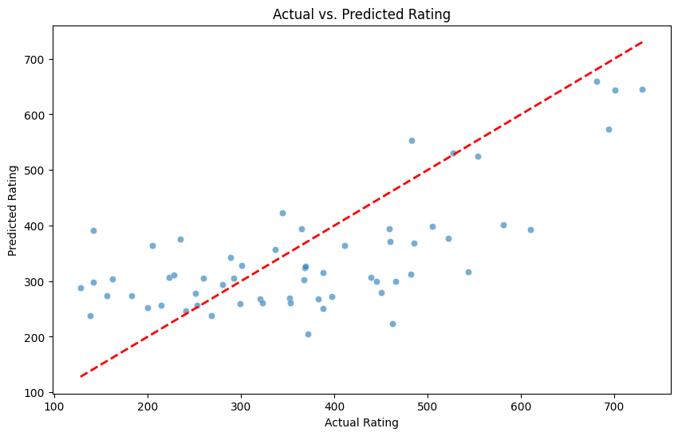

import numpy as np
import pandas as pd
import seaborn as sns
from sklearn.model_selection import train_test_split, GridSearchCV, cross_val_score
from sklearn.pipeline import Pipeline
from sklearn.compose import ColumnTransformer
from sklearn.impute import SimpleImputer
from sklearn.preprocessing import StandardScaler, OneHotEncoder
from sklearn.neighbors import KNeighborsRegressor
from sklearn.metrics import mean_squared_error
import matplotlib.pyplot as plt
from joblib import dump
credit_train = pd.read_csv("https://cs307.org/lab-02/data/credit-train.csv")
X_train = credit_train.drop("Rating", axis=1)
y_train = credit_train["Rating"]Lab 02: Credit Rating
Lab 02: Credit Rating
Introduction:
A credit rating is an evaluation of the risk associated with loaning money or extending credit to a potential debtor. In this case, we are considering credit scores of individual consumers, but credit ratings in general can apply to both individuals or organizations, even entire states and countries. Each observation contains information about a particular banking customer. We assume that these are customers operating in the United States.
In this lab, we will use data orginally designed to predict the balance on credit card, the data for this code is only the training data split from train-tesd data, where the test data is used to grade the model fit to the training data here. In general, we will use a regression model that predicts the credit rating for an individual in the US based on income and demographic information.
Methods
Test Statistics
rating_mean = credit_train['Rating'].mean()
rating_std = credit_train['Rating'].std()
student_rating_stats = credit_train.groupby('Student')['Rating'].agg(['mean','std','count'])
marriage_rating_stats = credit_train.groupby('Married')['Rating'].agg(['mean','std','count'])
corr_rating = credit_train[['Rating','Age','Income']].corr()['Rating'].drop('Rating')
a = credit_train.isnull().mean() # search for missing data
rating_mean,rating_std, student_rating_stats, marriage_rating_stats, corr_rating, a(357.51666666666665,
157.09976929943386,
mean std count
Student
No 359.244361 158.383141 266
Yes 344.100000 146.646267 30,
mean std count
Married
No 359.389831 154.677389 118
Yes 358.275281 159.851653 178,
Age 0.148695
Income 0.795528
Name: Rating, dtype: float64,
Rating 0.000000
Income 0.146667
Age 0.096667
Education 0.070000
Gender 0.016667
Student 0.013333
Married 0.013333
Ethnicity 0.063333
dtype: float64)Model
We use pipeline, gridsearchCV to ensure robust preprocessing and optimal parameter selection. We use imputation to fill missing value, and data is unmodified. GridSearchCV plays a pivotal role in this setup by exhaustively searching through a predefined grid of hyperparameters specific to the KNN algorithm, such as the number of neighbors, the weight function used in prediction, and the distance metric for measuring the proximity between instances. This exhaustive search is coupled with cross-validation to evaluate the performance of each parameter combination, thereby ensuring that the selected model is not only tailored to the peculiarities of the training data but also generalizes well to unseen data.The outcome of this process is a finely tuned model encapsulated within the Pipeline, ready to predict outcomes on new data that has the same variable names and types as the training set. This model, referred to as mod in the context of the autograder, is fully equipped with a .predict(X_test) method, allowing for seamless evaluation against a test set with a compatible shape and ensuring adherence to the lab’s guidelines for model submission.
X = credit_train.drop('Rating', axis=1)
y = credit_train['Rating']
# Handling categorical and numerical columns separately
numeric_features = X.select_dtypes(include=['int64', 'float64']).columns
categorical_features = X.select_dtypes(include=['object']).columns
# Creating transformers for numerical and categorical data
numeric_transformer = Pipeline(steps=[
('imputer', SimpleImputer(strategy='mean')),
('scaler', StandardScaler())
])
categorical_transformer = Pipeline(steps=[
('imputer', SimpleImputer(strategy='constant', fill_value='missing')),
('onehot', OneHotEncoder(handle_unknown='ignore'))
])
# Combining transformers into a ColumnTransformer
preprocessor = ColumnTransformer(
transformers=[
('num', numeric_transformer, numeric_features),
('cat', categorical_transformer, categorical_features)
])
# Creating a KNN regressor pipeline
knn_pipeline = Pipeline(steps=[
('preprocessor', preprocessor),
('regressor', KNeighborsRegressor())
])
param_grid = {
'regressor__n_neighbors': [3, 5, 7, 9,11,13],
'regressor__weights': ['uniform', 'distance'],
'regressor__metric': ['euclidean', 'manhattan','minkowski', 'chebyshev'], # Exploring more metrics
'regressor__algorithm': ['auto', 'ball_tree', 'kd_tree', 'brute']
}
grid_search = GridSearchCV(knn_pipeline, param_grid, cv=5, scoring='neg_mean_squared_error', verbose=1)
# Splitting data for cross-validation
X_train, X_test, y_train, y_test = train_test_split(X, y, test_size=0.2, random_state=42)
grid_search.fit(X_train, y_train)
best_params = grid_search.best_params_
best_score = np.sqrt(-grid_search.best_score_)
# Saving Results
model_filename = 'credit-ratings.joblib'
dump(grid_search, model_filename)
best_params, best_scoreFitting 5 folds for each of 192 candidates, totalling 960 fits({'regressor__algorithm': 'kd_tree',
'regressor__metric': 'chebyshev',
'regressor__n_neighbors': 13,
'regressor__weights': 'distance'},
113.57464125142172)Visualization
The plot displays the accuracy of the model across the range of data. Points close to red-dashed line indicate higher accuracy.
y_pred = grid_search.predict(X_test)
# Create a scatter plot of actual vs predicted values
plt.figure(figsize=(10, 6))
sns.scatterplot(x=y_test, y=y_pred, alpha=0.6)
plt.plot([y_test.min(), y_test.max()], [y_test.min(), y_test.max()], '--r', linewidth=2)
plt.xlabel('Actual Rating')
plt.ylabel('Predicted Rating')
plt.title('Actual vs. Predicted Rating')
plt.show()
Discussion
The use of demographic information to predict credit ratings raises significant ethical and legal questions. Specifically, factors such as age, gender, ethnicity, and marital status could introduce biases that unfairly disadvantage certain groups, leading to discriminatory practices. In the United States, the Equal Credit Opportunity Act (ECOA) prohibits discrimination against applicants on the basis of race, color, religion, national origin, sex, marital status, age, or because they receive public assistance. Therefore, while a model might technically be capable of using such information to predict credit ratings, doing so could violate legal standards and ethical norms.
The model should not be used to predict futuer credit rating. A better law-abiding model can use a detailed feature-analysis incooporated into the machine learning model, while increasing relatability and reliability by reducing reliance on senstive demographic information.